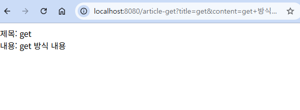
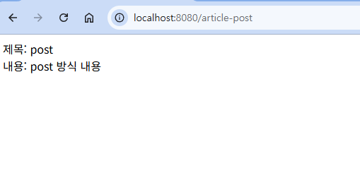
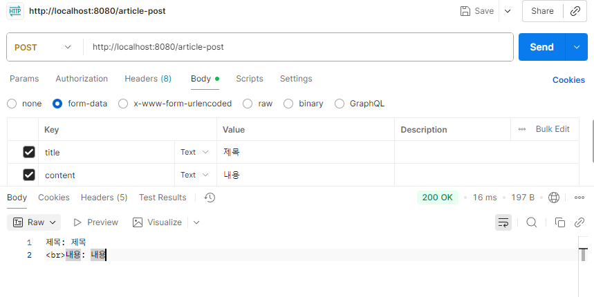
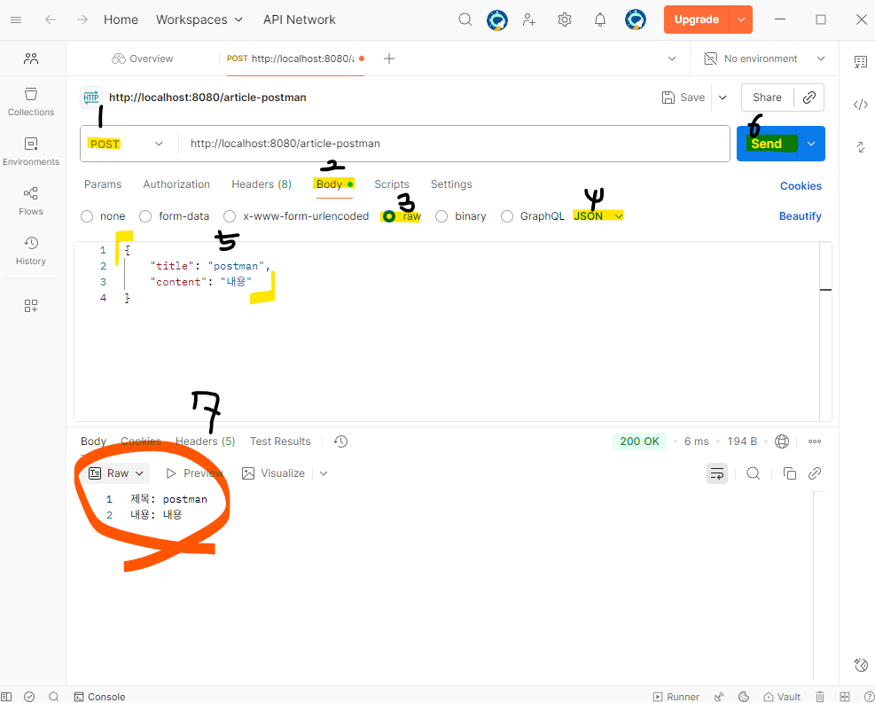
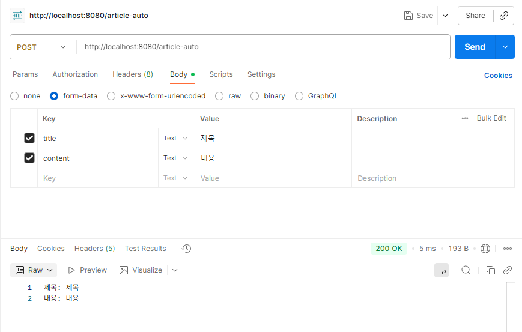

get 방식
화면으로만 테스트 가능

GET 방식 호출 결과 화면
post 방식
화면 or 포스트맨 둘 다 테스트 가능

GET 방식 호출 결과 화면

POST 방식 호출 결과 화면
postman 방식
포스트맨으로만 테스트 가능. "/article-postman"

POST MAN 방식 호출 결과 화면
auto 방식
포스트맨으로만 테스트 가능

POST MAN 방식 호출 결과 화면